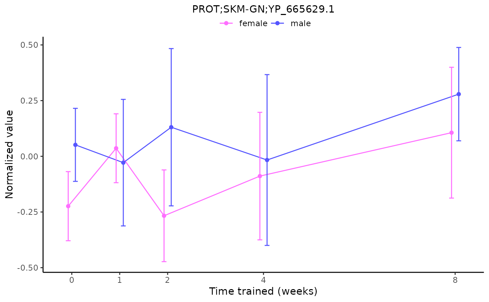
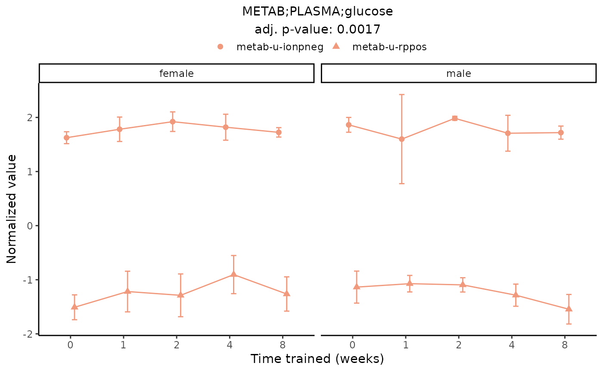

Plot normalized sample-level data for a single feature. Points are mean values across samples in each group, and error bars indicate standard deviations.
Usage
plot_feature_normalized_data(
assay = NULL,
tissue = NULL,
feature_ID = NULL,
feature = NULL,
title = NULL,
add_gene_symbol = FALSE,
facet_by_sex = FALSE,
scale_x_by_time = TRUE,
return_data = FALSE,
exclude_outliers = TRUE,
add_adj_p = FALSE,
...
)Arguments
- assay
NULL or character, assay abbreviation, one of MotrpacRatTraining6moData::ASSAY_ABBREV
- tissue
NULL or character, tissue abbreviation, one of MotrpacRatTraining6moData::TISSUE_ABBREV
- feature_ID
NULL or character, MoTrPAC feature identifier or metabolite RefMet ID
- feature
NULL or character, unique feature identifier in the format 'MotrpacRatTraining6moData::ASSAY_ABBREV;MotrpacRatTraining6moData::TISSUE_ABBREV;feature_ID' only for training-regulated features at 5% IHW FDR. For redundant differential features, 'feature_ID' is prepended with the specific platform to make unique identifiers. See MotrpacRatTraining6moData::REPEATED_FEATURES for details.. If NULL,
assay,tissue, andfeature_IDmust all be specified.- title
character, plot title. By default, the plot ID is
feature. Ifadd_gene_symbol = TRUE, the gene symbol is also added to the plot title.- add_gene_symbol
bool, whether to add corresponding gene symbol to plot title. Default: FALSE
- facet_by_sex
bool, whether to facet the plot by sex. If
TRUE, lines are colored by tissue. IfFALSE, lines are colored by sex. Default: FALSE- scale_x_by_time
bool, whether to scale the x-axis by time. If
FALSE, space the time points (0w, 1w, 2w, 4w, 8w) evenly. Default: TRUE- return_data
bool, whether to return data instead of plot. Default: FALSE
- exclude_outliers
bool, whether to exclude data from sample outliers. Default: TRUE (see MotrpacRatTraining6moData::OUTLIERS)
- add_adj_p
bool, whether to include the training adjusted p-value (AKA selection FDR) in the plot subtitle. Default: TRUE
- ...
additional arguments passed to
load_sample_data()
Value
a ggplot2::ggplot() object or a data frame if return_data = TRUE
or NULL if the data cannot be found
Examples
# Plot a differential feature and add gene symbol
plot_feature_normalized_data(feature = "ACETYL;HEART;NP_001003673.1_K477k",
add_gene_symbol = TRUE)
# Plot a differential epigenetic feature and facet by sex
plot_feature_normalized_data(feature = "METHYL;HEART;chr20-38798_cluster11",
add_gene_symbol = TRUE,
facet_by_sex = TRUE)
# Plot a redundant differential feature
plot_feature_normalized_data(assay = "IMMUNO",
tissue = "PLASMA",
feature_ID = "BDNF",
facet_by_sex = TRUE)
#> Multiple features correspond to 'IMMUNO;PLASMA;BDNF'. Plotting them together.
# Plot one measurement of a redundant feature
plot_feature_normalized_data(assay = "IMMUNO",
tissue = "PLASMA",
feature_ID = "rat-myokine:BDNF",
facet_by_sex = TRUE)
# Plot a non-differential feature
plot_feature_normalized_data(assay = "PROT",
tissue = "SKM-GN",
feature_ID = "YP_665629.1")
#> 'PROT;SKM-GN;YP_665629.1' is not a training-regulated feature. Looking in all sample-level data.
#> PROT_SKMGN_NORM_DATA

# Plot a merged feature from meta-regression,
# don't scale the x-axis, facet by sex, and include the training p-value
plot_feature_normalized_data(assay = "METAB",
tissue = "PLASMA",
feature_ID = "glucose",
scale_x_by_time = FALSE,
add_adj_p = TRUE,
facet_by_sex = TRUE)
#> Multiple features correspond to 'METAB;PLASMA;glucose'. Plotting them together.
#> Adding differential analysis p-value...
#> METAB_PLASMA_DA_METAREG
